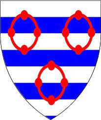

1538282584 Forne Sigulfsson de Greystoke
Blev ca 69 år.

Född:
omkring 1060 England.
[1]
Död:
före 1130 England.
[1]
Barn med ?
Barn:
Ives de Greystoke (1080? - 1156?)
Personhistoria
Årtal
Ålder
Händelse
1060?
Födelse omkring 1060 England
[1]
<1130
Död före 1130 England
[1]
Källor
[1]
wikitree